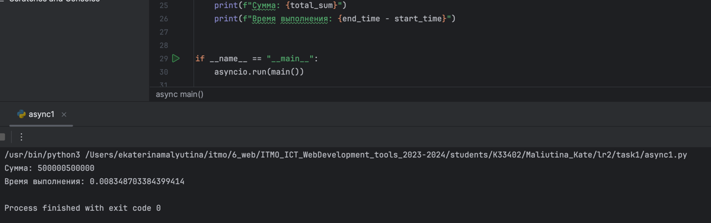
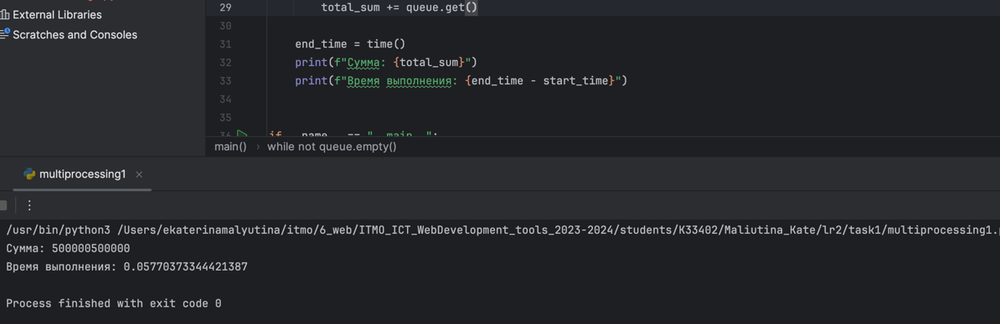
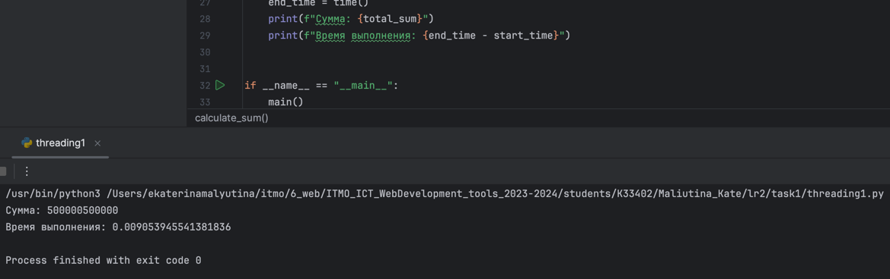
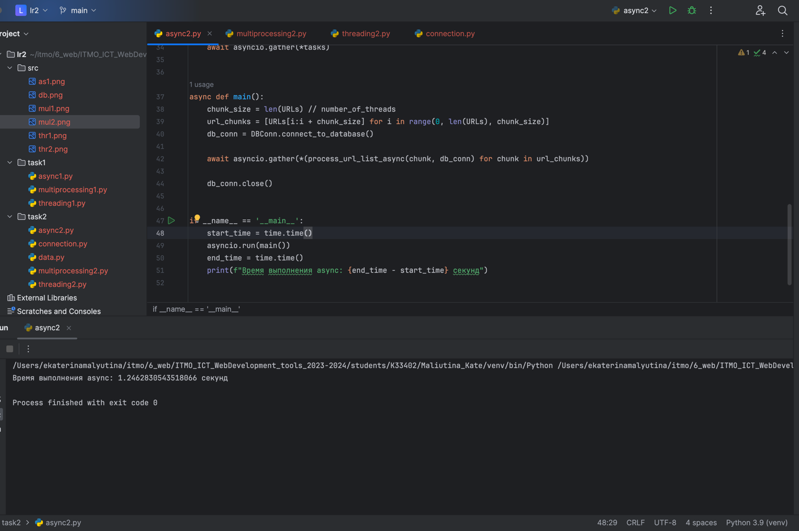
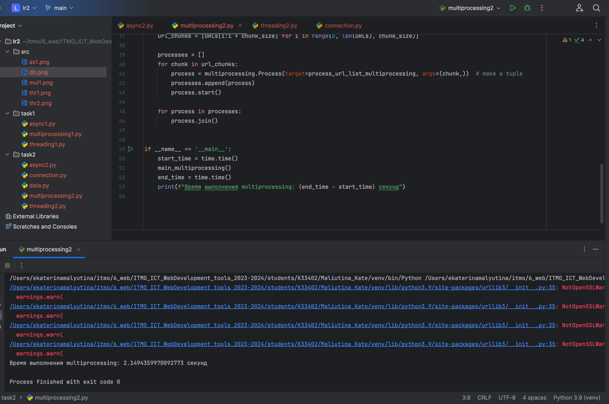
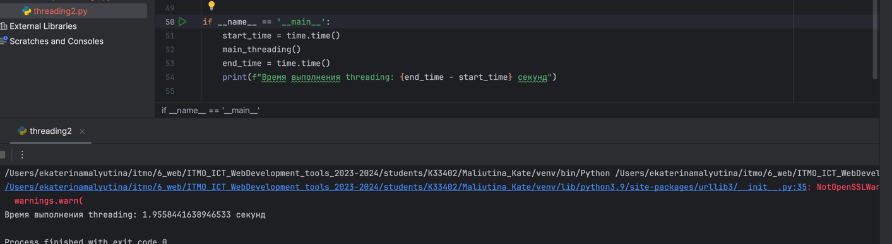
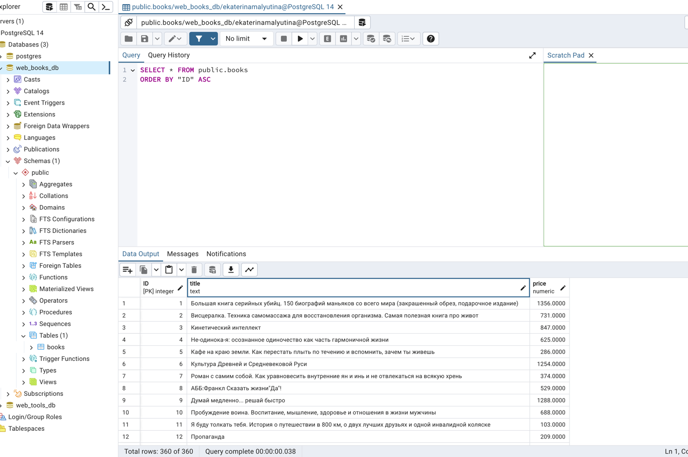

Лабораторная часть
Ниже представлен код с подробными комментариями и скрины рабочие.
task1/async1.py
import asyncio
from time import time
# функция подсчета суммы в заданном диапозоне
async def calculate_sum(start, end):
s = sum(range(start, end + 1))
return s
async def main():
start_time = time() # засекаем начальное время
task_count = 5 # выполняться программа будет в 5 корутин
numbers_per_task = 1_000_000 // task_count # в каждой корутине будет считаться сумма 200_000 чисел
tasks = list() # создаем список корутин, где будут они храниться
for i in range(task_count): # проходимся циклом и запускаем корутины
start = i * numbers_per_task + 1 # первый индекс вычисляемого интервала
end = start + numbers_per_task - 1 # последний индекс вычисляемого интервала
tasks.append(calculate_sum(start, end)) # добавляем к списку асинхронную функцию подсчета
results = await asyncio.gather(*tasks) # ожидаем выполнения всех заданий асинхронно
total_sum = sum(results) # считаем сумму тех 5 сумм
end_time = time() # засекаем конечное время
print(f"Сумма: {total_sum}") # выводим сумму
print(f"Время выполнения: {end_time - start_time}") # выводим время выполнения
if __name__ == "__main__":
asyncio.run(main())

task1/multiprocessing1.py
from multiprocessing import Process, Queue
from time import time
# функция подсчета суммы в заданном диапозоне
def calculate_sum(start, end, queue):
# queue - очередь значений, куда мы складываем все подсчитанные суммы
queue.put(sum(range(start, end + 1)))
def main():
start_time = time() # засекаем начальное время
queue = Queue() # создаем очередь для асинхронного сохранения значений
process_count = 5 # выполняться программа будет в 5 процессов
numbers_per_process = 1_000_000 // process_count # в каждом процессе будет считаться сумма 200_000 чисел
processes = list() # создаем список процессов, где будут они храниться
for i in range(process_count): # проходимся циклом и запускаем процессы
start = i * numbers_per_process + 1 # первый индекс вычисляемого интервала
end = start + numbers_per_process - 1 # последний индекс вычисляемого интервала
p = Process(target=calculate_sum, args=(start, end, queue)) # создаем процесс, передаем функцию и ее параметры
processes.append(p) # включаем процесс в наш список, чтобы потом ждать его завершения
p.start() # запускаем поток
for p in processes: # в цикле ожидаем завершения всех процессов
p.join() # "присоединияемся" к ожиданию окончания
total_sum = 0 # объявляем общую сумму
while not queue.empty(): # пока очередь не пуста и в ней есть значения
total_sum += queue.get() # складываем с общей суммой
end_time = time() # засекаем конечное время
print(f"Сумма: {total_sum}") # выводим сумму
print(f"Время выполнения: {end_time - start_time}") # выводим время выполнения
if __name__ == "__main__":
main()

task1/threading1.py
import threading
from time import time
# функция подсчета суммы в заданном диапозоне
def calculate_sum(start, end, result, index):
result[index] = sum(range(start, end + 1))
# в result хранятся последовательно 5 сумм, которые вычисляются параллельно
def main():
start_time = time() # засекаем начальное время
thread_count = 5 # выполняться программа будет в 5 потоков
numbers_per_thread = 1_000_000 // thread_count # в каждом потоке будет считаться сумма 200_000 чисел
threads = list() # создаем список потоков, где будут они храниться
results = [0] * thread_count # результирующий массив сумм
for i in range(thread_count): # проходимся циклом и запускаем потоки
start = i * numbers_per_thread + 1 # первый индекс вычисляемого интервала
end = start + numbers_per_thread - 1 # последний индекс вычисляемого интервала
t = threading.Thread(target=calculate_sum, args=(start, end, results)) # создаем поток, передаем функцию и ее параметры
threads.append(t) # включаем поток в наш список, чтобы потом ждать его завершения
t.start() # запускаем поток
for t in threads: # в цикле ожидаем завершения всех потоков
t.join() # "присоединияемся" к ожиданию окончания
total_sum = sum(results) # считаем сумму тех 5 сумм
end_time = time() # засекаем конечное время
print(f"Сумма: {total_sum}") # выводим сумму
print(f"Время выполнения: {end_time - start_time}") # выводим время выполнения
if __name__ == "__main__":
main()

task2/async2.py
import asyncio
import time
import aiohttp
from bs4 import BeautifulSoup
from connection import DBConn
from data import URLs, number_of_threads
async def parse_and_save_async(url, db_conn):
try:
async with aiohttp.ClientSession(connector=aiohttp.TCPConnector(ssl=False)) as session: # асинхронно создаем клиент-сессию для совершения запросов
async with session.get(url) as response: # асинхронно получаем ответ по ссылке из клиента-сессии
page = await response.text() # получаем страницу текстом
soup = BeautifulSoup(page, 'html.parser') # создаем парсер
books = soup.find_all('div', class_='product-card') # находим все блоки книг по классу
for book in books: # проходимся в цикле по всем книгам
title = book.attrs['data-product-name'] # получаем название книги
price = book.attrs['data-product-price-discounted'] # получаем цену книги
with db_conn.cursor() as cursor: # через специальный класс cursor получаем доступ к базе данных
cursor.execute(DBConn.INSERT_SQL, (title, price)) # выполняем ранее написанную команду и передаем в нее аргументы
db_conn.commit() # подтверждаем изменения
except Exception as e: # при получении исключения
print("Ошибка:", e) # выводим ошибку
db_conn.rollback() # откатываем изменения
async def process_url_list_async(url_list, conn):
tasks = [] # создаем список корутин, где будут они храниться
for url in url_list: # проходимся циклом
task = asyncio.create_task(parse_and_save_async(url, conn)) # и запускаем корутины
tasks.append(task) # добавляем к списку асинхронную функцию подсчета
await asyncio.gather(*tasks) # ожидаем выполнения всех заданий асинхронно
async def main():
chunk_size = len(URLs) // number_of_threads # определяем количество ссылок для каждой потока (2)
url_chunks = [URLs[i:i + chunk_size] for i in range(0, len(URLs), chunk_size)] # определяем сами ссылки
db_conn = DBConn.connect_to_database() # подключаемся к базе данных
await asyncio.gather(
*(process_url_list_async(chunk, db_conn) for chunk in url_chunks)) # ожидаем выполнения всех заданий асинхронно
db_conn.close() # закрываем подключение к базе данных
if __name__ == '__main__':
start_time = time.time() # засекаем начальное время
asyncio.run(main()) # запускаем программу
end_time = time.time() # засекаем конечное время
print(f"Время выполнения async: {end_time - start_time} секунд") # выводим время выполнения

task2/multiprocessing2.py
import multiprocessing
import time
import requests
from bs4 import BeautifulSoup
from connection import DBConn
from data import URLs, number_of_threads
def parse_and_save_multiprocessing(url):
db_conn = DBConn.connect_to_database() # подключаемся к базе данных
try:
page = requests.get(url) # получаем страницу
soup = BeautifulSoup(page.text, 'html.parser') # создаем парсер
books = soup.find_all('div', class_='product-card') # находим все блоки книг по классу
for book in books: # проходимся в цикле по всем книгам
title = book.attrs['data-product-name'] # получаем название книги
price = book.attrs['data-product-price-discounted'] # получаем цену книги
with db_conn.cursor() as cursor: # через специальный класс cursor получаем доступ к базе данных
cursor.execute(DBConn.INSERT_SQL, (title, price)) # выполняем ранее написанную команду и передаем в нее аргументы
db_conn.commit() # подтверждаем изменения
except Exception as e: # при получении исключения
print("Ошибка:", e) # выводим ошибку
db_conn.rollback() # откатываем изменения
finally: # в конце всегда закрываем соединение с базой данных
db_conn.close()
def process_url_list_multiprocessing(url_list):
for url in url_list: # в цикле берем каждую ссылку
parse_and_save_multiprocessing(url) # и вызываем функцию парсинга
def main_multiprocessing():
chunk_size = len(URLs) // number_of_threads # определяем количество ссылок для каждого процесса (2)
url_chunks = [URLs[i:i + chunk_size] for i in range(0, len(URLs), chunk_size)] # определяем сами ссылки
processes = [] # объявляем список процессов
for chunk in url_chunks: # проходимся циклом по ссылкам
process = multiprocessing.Process(target=process_url_list_multiprocessing, args=(chunk,)) # создаем поток, передаем функцию обработчик и параметры через tuple
processes.append(process) # включаем процесс в список для отслеживания
process.start() # запускаем процесс
for process in processes: # в цикле всех процессов
process.join() # ожидаем его завершения
if __name__ == '__main__':
start_time = time.time() # засекаем начальное время
main_multiprocessing() # запускаем программу
end_time = time.time() # засекаем конечное время
print(f"Время выполнения multiprocessing: {end_time - start_time} секунд") # выводим время выполнения

task2/threading2.py
import threading
import time
from connection import DBConn
import requests
from bs4 import BeautifulSoup
from data import URLs, number_of_threads
def parse_and_save_threading(url, db_conn):
try: # пробуем, поскольку может упасть исключение
page = requests.get(url) # получаем страницу
soup = BeautifulSoup(page.text, 'html.parser') # создаем парсер
books = soup.find_all('div', class_='product-card') # находим все блоки книг по классу
for book in books: # проходимся в цикле по всем книгам
title = book.attrs['data-product-name'] # получаем название книги
price = book.attrs['data-product-price-discounted'] # получаем цену книги
with db_conn.cursor() as cursor: # через специальный класс cursor получаем доступ к базе данных
cursor.execute(DBConn.INSERT_SQL, (title, price)) # выполняем ранее написанную команду и передаем в нее аргументы
db_conn.commit() # подтверждаем изменения
except Exception as e: # при получении исключения
print("Ошибка:", e) # выводим ошибку
db_conn.rollback() # откатываем изменения
def process_url_list_threading(url_list, db_conn):
for url in url_list: # в цикле берем каждую ссылку
parse_and_save_threading(url, db_conn) # и вызываем функцию парсинга
def main_threading():
chunk_size = len(URLs) // number_of_threads # определяем количество ссылок для каждого потока (2)
url_chunks = [URLs[i:i + chunk_size] for i in range(0, len(URLs), chunk_size)] # определяем сами ссылки
db_conn = DBConn.connect_to_database() # подключаемся к базе данных
threads = [] # объявляем список потоков
for chunk in url_chunks: # проходимся циклом по ссылкам
thread = threading.Thread(target=process_url_list_threading, args=(chunk, db_conn)) # создаем поток, передаем функцию обработчик и параметры
threads.append(thread) # включаем поток в список для отслеживания
thread.start() # запускаем поток
for thread in threads: # в цикле всех потоков
thread.join() # ожидаем его завершения
db_conn.close() # закрываем подключение к базе данных
if __name__ == '__main__':
start_time = time.time() # засекаем начальное время
main_threading() # запускаем программу
end_time = time.time() # засекаем конечное время
print(f"Время выполнения threading: {end_time - start_time} секунд") # выводим время выполнения

task2/data.py
# Список всех ссылок, по которым мы будем собирать данные
URLs = [
'https://www.bookvoed.ru/catalog/knigi-s-avtografom-4435',
'https://www.bookvoed.ru/catalog/detskie-knigi-1159',
'https://www.bookvoed.ru/catalog/samoobrazovanie-i-razvitie-4560',
'https://www.bookvoed.ru/catalog/khobbi-i-dosug-4056',
'https://www.bookvoed.ru/catalog/estestvennye-nauki-1347',
'https://www.bookvoed.ru/catalog/religiya-1437',
]
# Количество потоков/единиц выполнения
number_of_threads = 3
task2/connection.py
import psycopg2
# Класс базы данных
class DBConn:
# SQL команда для вставки книг, %s будут заменять на переданные параметры
# public - схема в бд, books - таблица внутри схемы
INSERT_SQL = """INSERT INTO public.books(title, price) VALUES (%s, %s)"""
# Аннотация/декоратор статического метода - метод, который не привязан к состоянию экземпляра или класса
# (не нужна ссылка на сам класс 'self')
@staticmethod
def connect_to_database():
conn = psycopg2.connect(
dbname="web_books_db", # название бд
user="ekaterinamalyutina", # имя пользователя
password="postgres", # пароль пользователя
host="localhost", # хост
port="5432" # дефолтный порт
) # подключаемся к этой бд и возвращаем эту связь
return conn
